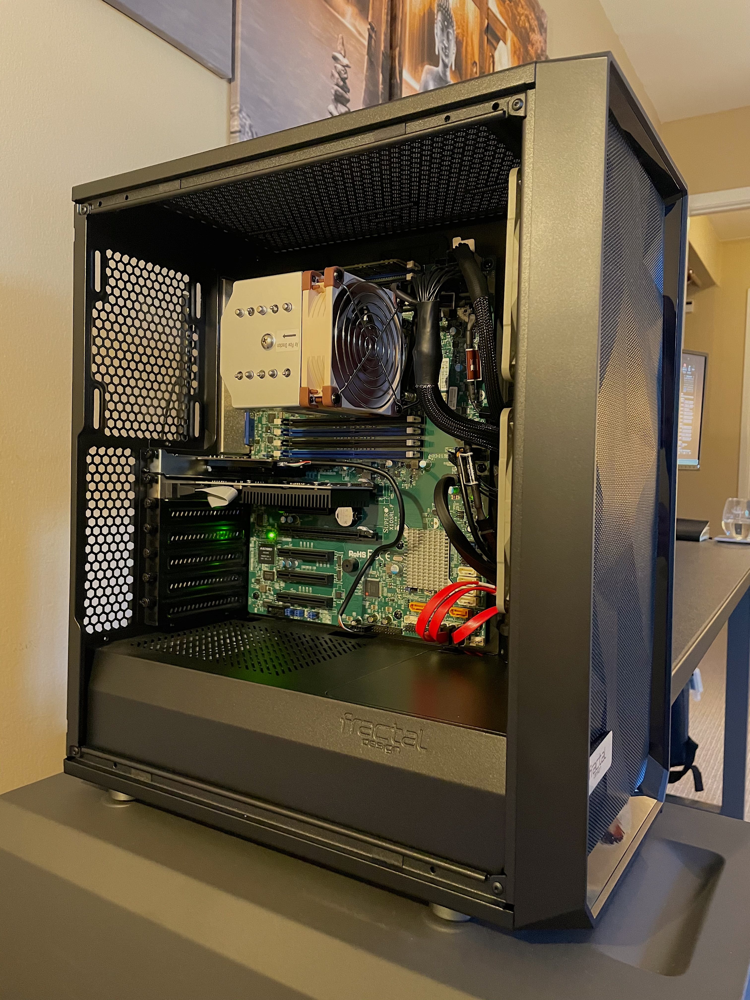
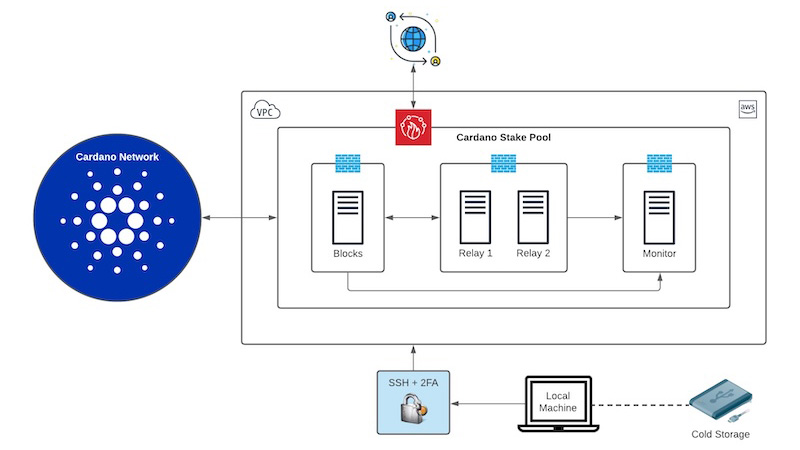
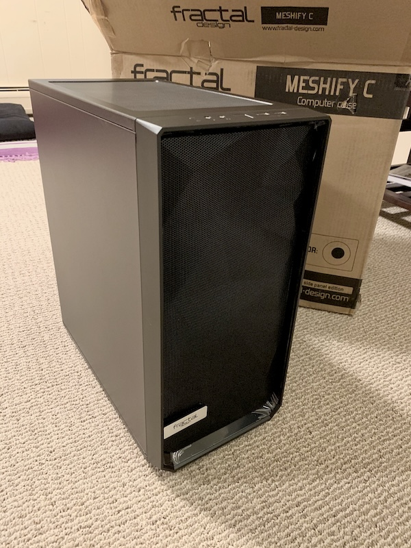
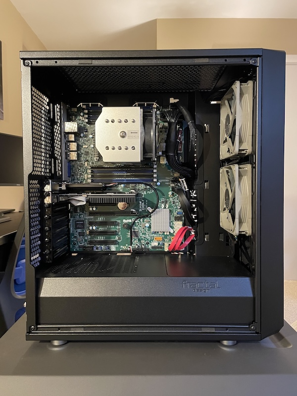
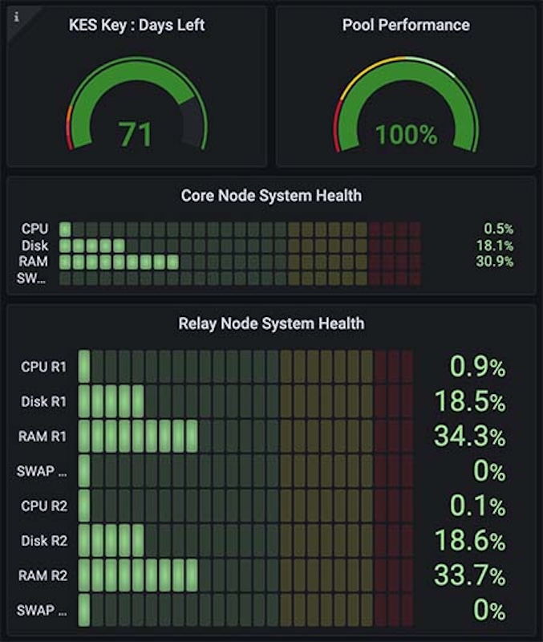

Building a Meshify C Homelab for Blockchain

In late 2021, I assembled this homelab in the Fractal Design Meshify C to dive deep into blockchain technology and NFTs. What started as curiosity quickly became hands-on mastery: launching my own Cardano stake pool, producing real blocks to secure the network, and minting my own NFTs on-chain using this architecture.
This project was a perfect mix of hardware tinkering, secure Linux setup, and distributed systems, which is exactly the kind of hands-on challenge I love.
The homelab began as the full testbed and later became a redundant relay in production.
Hardware Specs
A budget-friendly, server-grade setup optimized for 24/7 reliability and ECC memory:
| Component | Details |
|---|---|
| Case | Fractal Design Meshify C - Black |
| Motherboard | Supermicro X10SRL-F LGA2011-3 |
| CPU | Intel Xeon E5-2630 v3 2.4 GHz ($109) |
| CPU Cooler | Supermicro 4U Active CPU Heatsink SNK-P0050AP4 |
| PSU | Corsair RM750x 750 Watt, 80+ Gold, Fully Modular |
| GPU | MSI GeForce GT 710 1GB |
| RAM | 2× Supermicro 16GB 288-Pin ECC Registered |
| SSD | WD Blue 3D NAND 250GB |
| HDD | WD Blue 1TB 7200 RPM |
| NIC | TP-Link AX3000 Wi-Fi 6 PCIe Adapter |
Primary Purpose and Architecture
Core motivation: Understanding blockchain mechanics and NFT creation on Cardano's secure, proof-of-stake network.
Key outcomes:
- Block Production: The isolated block producer validated transactions, participated in consensus, and minted blocks, directly contributing to network security.
- NFT Minting: Using cold keys and this setup, I successfully minted NFTs on-chain.

Full topology—isolated block producer, AWS relays, homelab relay, Grafana monitoring, SSH+2FA access, and air-gapped cold storage.
Build, Test, and Launch Process
Assembly in the Meshify C was straightforward and rewarding. I originally documented the full build and early stake pool setup, but a drive failure wiped those archives, becoming a tough lesson in redundancy that sharpened my cybersecurity habits (now with robust multi-layer backups).
The process: design → local testing → AWS deployment → mainnet launch → iterative tuning.
Outcomes and Metrics
The stake pool ran reliably:
- Excellent block propagation and uptime
- Consistent epoch participation and block production
- Successful on-chain NFT mints
- End-to-end proof of a secure, functional architecture
The deepest reward was tangible understanding of decentralized systems.
Image Gallery
-
 Finished Exterior
Clean black Meshify C front panel. -
 Internal View 1
Supermicro board, Noctua cooler. -
 Internal View 2
Internal View 2
PSU, primary SSD, tidy cabling. -
 Unboxing & Parts
Unboxing & Parts
Boxes ready for assembly. -
 System Monitoring
Grafana health and performance gauges. -
 Live Nodes
Live Nodes
Block and relay nodes in gLiveView.
Reflections
This project delivered blockchain knowledge from the ground up—producing blocks that secure a global network, minting NFTs that persist forever on-chain, and learning hard lessons about data resilience. Neurodiversity turned deep-focus debugging sessions into breakthroughs. It mirrors enterprise leadership: design resilient systems, mitigate risks, and back everything up rigorously.
If you're curious about staking, NFTs, or homelab builds, start small—the hands-on learning is unmatched.
Joe Hawley
Fortune 500 Director | CISSP
M.S. Cybersecurity Graduate Student @ Georgia Institute of Technology